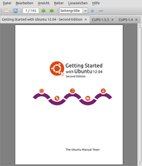
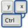

qpdfview
Dieser Artikel wurde für die folgenden Ubuntu-Versionen getestet:
Ubuntu 16.04 Xenial Xerus
Ubuntu 14.04 Trusty Tahr
Zum Verständnis dieses Artikels sind folgende Seiten hilfreich:
Qpdfview  ist ein Dokument-Betrachter, der wie Evince und viele andere Programme Poppler zur Anzeige von PDF-Dateien verwendet. Daneben können auch PostScript- und DjVu-Dateien angezeigt werden. Qpdfview bietet alle praxisrelevanten Funktionen wie die Navigation über ein Inhaltsverzeichnis (sofern vorhanden), das Durchsuchen des Dokuments und den Ausdruck. Ein Alleinstellungsmerkmal (im Vergleich mit anderen Linux-Programmen) ist das Öffnen mehrerer Dateien über Reiter (Tabs). Bei der grafischen Oberfläche kommt die Grafikbibliothek Qt zum Einsatz.
ist ein Dokument-Betrachter, der wie Evince und viele andere Programme Poppler zur Anzeige von PDF-Dateien verwendet. Daneben können auch PostScript- und DjVu-Dateien angezeigt werden. Qpdfview bietet alle praxisrelevanten Funktionen wie die Navigation über ein Inhaltsverzeichnis (sofern vorhanden), das Durchsuchen des Dokuments und den Ausdruck. Ein Alleinstellungsmerkmal (im Vergleich mit anderen Linux-Programmen) ist das Öffnen mehrerer Dateien über Reiter (Tabs). Bei der grafischen Oberfläche kommt die Grafikbibliothek Qt zum Einsatz.

Weitere Funktionen:
Separate Fenster für Inhaltsverzeichnis, Eigenschaften und Seitenvorschau
Präsentationsmodus (Vollbild)
Darstellung mehrerer Seiten auf einmal
Konfigurierbare Symbolleisten und Tastenkürzel
Persistente Einstellungen pro Datei
SyncTeX-Unterstützung (wichtig für das Zusammenspiel mit LaTeX-Editoren)
Kommentare erstellen (erst ab Ubuntu 12.10, noch in Entwicklung)
Anzeige von Formularen (erst ab Ubuntu 12.10, noch in Entwicklung)
Installation¶
 Das Programm kann aus den offiziellen Paketquellen installiert [1] werden:
Das Programm kann aus den offiziellen Paketquellen installiert [1] werden:
qpdfview (universe)
 mit apturl
mit apturl
Paketliste zum Kopieren:
sudo apt-get install qpdfview
sudo aptitude install qpdfview
PPA¶
Eine aktuellere Version (im Vergleich mit den offiziellen Paketquellen) ist bis einschließlich Ubuntu 15.10 über ein "Personal Package Archiv" (PPA) [2] verfügbar.
Adresszeile zum Hinzufügen des PPAs:
ppa:b-eltzner/qpdfview
Hinweis!
Zusätzliche Fremdquellen können das System gefährden.
Ein PPA unterstützt nicht zwangsläufig alle Ubuntu-Versionen. Weitere Informationen sind der  PPA-Beschreibung des Eigentümers/Teams b-eltzner zu entnehmen.
PPA-Beschreibung des Eigentümers/Teams b-eltzner zu entnehmen.
Damit Pakete aus dem PPA genutzt werden können, müssen die Paketquellen neu eingelesen werden.
Nach dem Aktualisieren der Paketquellen erfolgt die Installation wie oben angegeben.
Verwendung¶
Anschließend findet man es bei Ubuntu-Varianten mit einem Anwendungsmenü unter "Büro -> qpdfview" [3]. Alternativ kann man das Programm über das Kontextmenü ( ) des jeweiligen Dateimanagers nutzen (unter Umständen muss man dort die Anwendung noch über "Öffnen mit..." hinzufügen). Oder man richtet es im Webbrowser als externes Anzeigeprogramm für PDF-Dateien ein. Im Artikel Firefox/Plugins findet sich ein Beispiel dazu.
) des jeweiligen Dateimanagers nutzen (unter Umständen muss man dort die Anwendung noch über "Öffnen mit..." hinzufügen). Oder man richtet es im Webbrowser als externes Anzeigeprogramm für PDF-Dateien ein. Im Artikel Firefox/Plugins findet sich ein Beispiel dazu.
Die Bedienung ist weitgehend selbsterklärend. Ist eine Instanz von qpdfview bereits aktiv, werden (in Kombination mit einem Dateimanager) Dateien automatisch in einem neuen Reiter geöffnet. Innerhalb des Programms geschieht dies mit "Datei -> In einem neuen Reiter öffnen". Um die verschiedenen Ansichtsmodi auszuprobieren, lohnt ein Blick in den Menüpunkt "Ansicht". Hierbei ist zu beachten, dass manche Darstellungsarten wie ein Ein-/Aus-Schalter konzipiert sind, während andere sich ausschließen.
Bemerkenswert sind die vielfältigen Einstellungsmöglichkeiten, mit dem das Programm an die eigenen Vorlieben angepasst werden kann.
Tabs¶
Möchte man, dass PDF-Dateien tatsächlich immer als Tabs in nur einem Fenster geöffnet werden, kopiert man die Datei /usr/share/applications/qpdfview.desktop nach ~/.local/share/applications/qpdfview.desktop (also ins eigene Homeverzeichnis) und ändert folgende Zeile um die Option --unique:
Exec=qpdfview --unique %f
Möchte man sich beide Optionen behalten, kopiert man die Ausgangsdatei erneut, aber diesmal nach ~/.local/share/applications/qpdfviewNF.desktop, wobei das NF für "neues Fenster" steht (es kann eine beliebige Bezeichnung gewählt werden). Nun sollten unter "Öffnen mit" beide Optionen anwählbar sein.
Letzte Position im Dokument merken¶
Möchte man, die letzte angezeigte Stelle beim erneuten Öffnen eines PDFs angezeigt kriegen, so muss man die Option "Bearbeiten -> Einstellungen -> Verhalten -> Dateieinstellungen wiederherstellen" aktivieren.
Internetadressen¶
Enthält ein Dokument Internetadressen (URLs), können diese im Standard-Browser geöffnet werden. Aus Sicherheitsgründen muss dieses Verhalten erst unter "Bearbeiten -> Einstellungen -> Verhalten" aktiviert werden.
Hintergrundfarbe¶
Obwohl schwarze Schrift auf weißem Hintergrund den besten Kontrast bietet, empfinden manche diese Darstellung als zu grell. Qpdfview gehört zu den wenigen Programmen, in denen eine beliebige Hintergrundfarbe genutzt werden kann. Zu finden ist diese Einstellung unter "Bearbeiten -> Einstellungen -> Grafik -> Allgemein -> Papierfarbe".

Tastenkürzel¶
Da wie eingangs erwähnt die Belegung der Tastenkürzel angepasst werden kann, hier nur ein Auszug der Grundeinstellungen. Die Konfiguration erfolgt über "Bearbeiten -> Einstellungen -> Tastenkürzel".
| Tastenkürzel | |
| Taste(n) | Funktion |
| Bild ↓ | Vorwärts blättern |
| Bild ↑ | Rückwärts blättern |
| Nächste Seite | |
| ⌫ | Vorherige Seite |
| Strg + ↑ | Anzeige vergrößern |
| Strg + ↓ | Anzeige verkleinern |
| F1 | Hilfe |
| F11 | Vollbildmodus |
| F12 | Präsentationsmodus (auf Bildschirm 1) |
| F6 | Inhaltsverzeichnis (wenn vorhanden) |
| F7 | Eigenschaften des Dokuments |
| F8 | Seitenvorschau (Thumbnails) |
| Strg + F | Suchen |
| F3 | Weitersuchen |
| Strg + P | |
Problembehebung¶
Text markieren¶
Nach Drücken der Tastenkombination
Strg +
C verwandelt sich der Cursor von einer Hand in ein Kreuz. Damit kann der auszuwählende Text mit der linken Maustaste  eingerahmt werden. Wenn man anschließend die Maustaste wieder loslässt, erscheint ein Kontextmenü, in dem man "Text kopieren", "Bild kopieren" usw. auswählen kann.
eingerahmt werden. Wenn man anschließend die Maustaste wieder loslässt, erscheint ein Kontextmenü, in dem man "Text kopieren", "Bild kopieren" usw. auswählen kann.
 Übersichtsseite
Übersichtsseite- Erstellt mit Inyoka
-
 2004 – 2017 ubuntuusers.de • Einige Rechte vorbehalten
2004 – 2017 ubuntuusers.de • Einige Rechte vorbehalten
Lizenz • Kontakt • Datenschutz • Impressum • Serverstatus -
Serverhousing gespendet von